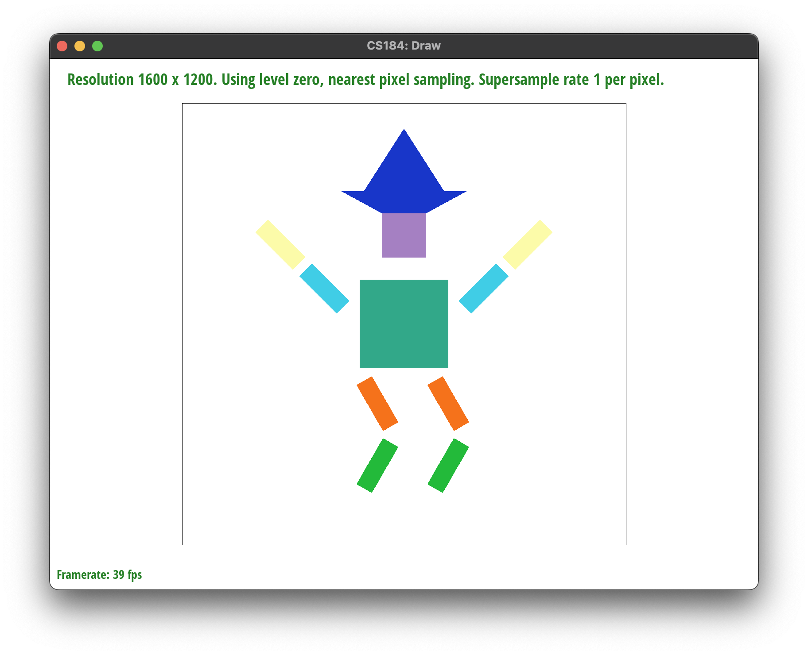

Overview
In this project, we implemented a simple rasterizer capable of drawing shapes (pixels, lines, triangles), utilizing different anti-aliasing methods in the forms of super-sampling, pixel sampling, and level sampling, texture mapping done through barycentric coordinates, and performing transforms.
Section I: Rasterization
Part 1: Rasterizing single-color triangles
Rasterization Rundown
For Task 1, we rasterize triangles by first determining a more optimized search space to color pixels within a triangle using the bounding box method. This method shrinks the coordinate space we have to search for by only considering a rectangle that bounds the triangle to be rasterized. We then iterate through each pixel within this box and check to see whether each one is located inside the triangle we want to rasterize.
Checking to see whether a pixel point is inside a triangle involves performing the three line test, where each line corresponds to an edge of the triangle. This test involves taking the dot product of each line’s normal vector (N) and
the vector from one of the vertices of the line to the target pixel point (V).
Since the dot product tells us the amount that vector V is pointing in the direction of vector N, we can tell whether the pixel point lies above the line (in the direction of N), on the line, or below the line (in the opposite direction of N) based on the dot product value (greater than, equal to, or less than 0, respectively). Depending on the winding order of the vectors/lines that make up the triangle (clockwise vs. counterclockwise), the normal vectors N either all point into the triangle or out of the triangle. Thus, we can conclude that for our 3 line test, our point is
inside of the triangle (or along the edge) if either all 3 dot products are greater than or equal to zero (when N vectors point into the triangle), or if all dot products are less than or equal to 0 (when N vectors point out of the triangle). There is never a case in which one of these conditions is true and the point is not in the triangle. In the case that the N vectors point into the triangle, there is no possibility for a point to have a negative or 0 dot product with all N vectors (see: desmos link, there is no white region of the plane). In the case that the N vectors all point out of the triangle, there is no possibility
for a point to have a positive or 0 dot product with all N vectors (see: desmos link, there is no region of the plane where all 3 shadings overlap). So, we know that our line test works. If our sampled point is indeed in the triangle, then we can check the bounds of x and y and then color the associated pixel of the sample_buffer by calling fill_pixel just as rasterize_point does.
Bounding Box Algorithm
As stated earlier, our algorithm checks each sample within the bounding box of the triangle, and thus performs no worse than such an algorithm. We determined the bounding box by calculating the min and max of the inputted x values of the vertices and the min and max of the inputted y values of the vertices, and only checking the samples bounded by the rectangle (xmin, ymin), (xmin, ymax), (xmax, ymax), and (xmax, ymin).
An Example:
Here is an example of the output when we rasterize triangles in the way described above. While the triangles were successfully rasterized and colored in, zooming in makes it clear that we have severe jaggies, which is undesirable. We will resolve this issue in future tasks.

|
Part 2: Antialiasing triangles
Walkthrough
In Task 2, we implemented supersampling in order to reduce aliasing. Our supersampling algorithm began with modifying our rasterize_triangle function such that we actually took this->sample_rate number of samples for every pixel, evenly spaced, and checked whether each of these samples were inside the triangle via the 3 line test function implemented in Task 1. To accommodate this increased amount of sampling, we also increased the size of our sample_buffer so that each of these smaller samples could have their own assigned color based on whether they passed the three line test or not. With our sample_buffer now being multiplicatively bigger, we also had to modify the resolve_to_framebuffer function, which takes the values in sample_buffer and fills the target framebuffer pixels. This is because, while the size of our sample_buffer increased in order to accommodate more sampling, our framebuffer did not, meaning that we would have to modify how the framebuffer handled the data given by the sample_buffer – specifically we took all this->sample_rate number of samples for each pixel and averaged the values before filling the designated pixel in the frame buffer. Using supersampling to be able to acquire these “averaged”, or “intermediate” values for each pixel allows us to antialias our triangles since it reduces the appearance of jaggies, and allows us to have smoother transitions between colors. The effect that these intermediate values are able to have on the appearance can be seen in the images below, using basic test 4.
Comparisons
Supersampling causes these effects to occur as it is a technique to perform anti-aliasing, which reduces the jaggedness (jaggies) of rendered shapes . It essentially approximates rendering a scaled-up, high resolution version of the original image, then averages the result back down to the original dimensions of the image. As depicted in the images, the edges of the triangle blur in increasing intensity as the supersample rate increases, which gives the rendered shapes a smoother appearance and reduces aliasing artifacts such as jaggies.
|
|
|
|
|
|
Part 3: Transforms
For Task 3, we filled out the 3x3 matrices for translating, scaling, and rotating. Using these transformation matrices, here are the changes we decided to make to cubeman:
|  |
Our updated cubeman can be seen here jumping in excitement. We chose to change his colors to better suit our preferences, and gave him a nice blue hat. Our goal with making these modifications was to turn him into a zany, colorful wizard that just succeeded in a life-changing, magical experiment that will better the lives of everyone in the world.
Section II: Sampling
Part 4: Barycentric coordinates
Explaining Barycentric Coordinates:
For Task 4, we implemented barycentric coordinates in order to interpolate colors across a triangle. Barycentric coordinates are a coordinate system for triangles that allows us to perform a weighted average for a point within the triangle, using the 3 values at each of the vertices. For vertex A we have alpha, vertex B we have beta, and vertex C we have gamma. Each of these weights, alpha, beta, and gamma, can be seen as a proportion that represents how much of their representative vertex has an influence on the value at the target point. Because they are proportions, alpha, beta, and gamma sum up to 1. The values of alpha, beta, gamma are inversely proportional to the distances of their respective vertices to the target point. For instance, if we have that alpha = 1 and beta and gamma = 0, then we’d just get point A, since according to the weights, point A has 100% influence on the target point. Also, 1 is the maximum value possible for a weight, which means that the distance must be the minimum, which is 0 – which is why in this case the target point is in fact just vertex A. In the case that alpha = 0.5, beta = 0.5, and gamma = 0, we’d get a point right in the middle of the AB edge, denoting that each of vertex A and B have a 50% influence on the target point, while vertex C has no influence.
This “influence” is especially apparent in the example below, where vertex A is red, vertex B is green, and vertex C is blue. You can see that as we approach the AC edge, the triangle’s color has little to no appearance of green, showing that the influence of vertex B becomes less and less (the weight of beta becomes very small while alpha and gamma take most of the weight). Along this edge, the color becomes more red as we get closer to vertex A (alpha’s value approaches 1, while gamma’s approaches 0 like beta’s), and more blue as we get closer to vertex C (gamma’s value approaches 1, while alpha’s approaches 0 like beta’s).
|
|
|
Part 5: "Pixel sampling" for texture mapping
Pixel Sampling and Implementation
For Task 5, we introduced texture mapping for rasterizing our triangles using pixel sampling. Pixel sampling is a way for us to map a texture onto our screen. It involves first going through every pixel (or every sample, if we are supersampling) in our triangle and using barycentric coordinates in order to calculate the respective location on the texture space. Given this location in texture space, we calculate a value for our point using the nearby texel(s). How exactly we do this depends on which of the two sampling methods we choose. If we use nearest neighbor sampling, then we simply pick the texel that is closest to our point. If we use bilinear sampling, then we pick the 4 surrounding texels and perform several linear interpolations in order to get a weighted average value from the 4 texels – we interpolate the top two together, then the bottom two, and then finally interpolate the results of the earlier two interpolations in order to get our final value for our texture point, which we assign back to our pixel (or sample) in screen space. Since nearest neighbor sampling only looks at one texel while bilinear sampling looks at 4 texels and takes a weighted average, the outputs for bilinear sampling are often more favorable and smooth in comparison to nearest neighbor sampling.
Examples
Here are examples from Task 5 where bilinear sampling clearly defeats nearest sampling.
|
|
|
|
|
|
As shown in the screenshots, bilinear sampling results in a smoother, blurred rendering for magnifying textures. There will be a large difference between nearest sampling and bilinear sampling in areas of the image where there are different colors in the same location. This is because nearest sampling will just take the nearest pixel’s color, while bilinear sampling will take a weighted average of four of the nearest pixels’ colors around the sample point. We can see this in the more jagged appearance of the “E” in the screenshots looking at nearest neighbor sampling, in comparison to the bilinear interpolation. Thus overall, nearest neighbor sampling makes the image look sharper but sometimes less realistic, while bilinear sampling causes a blurrier output that can look more natural and is therefore often more desired.
Part 6: "Level sampling" with mipmaps for texture mapping
Level Sampling and Implementation
In Task 6, we implemented level sampling. Level sampling is another technique to perform anti-aliasing by utilizing a mipmap to store a texture in an order of decreasing resolutions of itself. This results in having “levels” of scaled resolutions for the texture that we can sample from to improve performance. By using a mipmap, we can sample from a lower resolution version of the texture and determine the color of our pixel from that level’s texel. In this project, we implemented level sampling to choose from three different possible level options. The first is by always sampling from the original, full resolution texture, which is denoted as level 0. The second is by sampling from the level that is considered the nearest, which is calculated by determining the level that is closest to the resolution to the pixel(s) we are concerned with. The third option is by sampling from two different levels with resolutions that are above and below the resolution we are concerned with and linearly interpolating the colors from the result of those two levels to determine a weighted average for our output color. We implemented level sampling by first calculating the correct mipmap level to sample our texture from. To do so, we calculated (du/dx, dv/dx) and (du/dy, dv/dy), which were obtained from building off our uv barycentric coordinates (x,y) into (x+1, y) and (x, y+1), respectively. We then found the difference vectors from each of these vectors with the original uv vector, and scaled the difference vectors by the width and height of the texture accordingly. We then determined the maximum of the norm of these vectors, as described in the formula in lecture. To then find the correct mipmap level, we took the base 2 logarithm of this value, clamping the level at 0 if the log result is negative. This level is then used in sample_nearest and sample_bilinear to determine which mipmap level to sample from.
Tradeoffs Between Pixel, Level, and Super Sampling Techniques
Pixel sampling, as detailed in task 5, can either be nearest neighbor or bilinear interpolation. Nearest neighbor is fairly efficient, since we only have to look at the nearest neighbor and assign that value to our pixel, while bilinear interpolation is not as efficient since we actually have to look at the 4 surrounding texels and interpolate several times. On the other hand, bilinear interpolation is better in regards to antialiasing power, since it does not simply take the value of one texel, but takes a weighted average of the 4 neighboring texels in order to get a more accurate value. Both do not have issues with memory usage. Level sampling uses a mipmap to store several resolutions of a texture, so it uses more memory. However, it is useful for antialiasing, especially when involving a high resolution / high frequency texture that is being mapped to a lower frequency screen space. By being able to choose which resolution level we map from, we can better match the resolution of our screen space in order to produce a less aliased output. As for efficiency, using L_NEAREST should be fairly fast since we just have to calculate one level and sample from that, while L_LINEAR is a bit less efficient due to having to sample from multiple levels and then take the weighted average. Selecting the number of samples per pixel, aka supersampling, is great for antialiasing, since the multiplicative increase of samples and averaging helps when dealing with high frequency textures. However, since we are sampling so much more, it is quite costly and not very efficient. It also takes more memory since we have to increase the size of our sample buffer in order to store all of the samples.
Examples
Here is a png file we have chosen to demonstrate the result of using various combinations of pixel sample methods and level sample methods.
L_ZERO and P_NEAREST |
L_ZERO and P_LINEAR |
L_NEAREST and P_NEAREST |
L_NEAREST and P_LINEAR |
As depicted, L_ZERO and P_NEAREST results in aliasing, which gradually smoothens out as you go to
L_ZERO and P_LINEAR, then to L_NEAREST and P_NEAREST, and finally to L_NEAREST and P_LINEAR. Looking at the four, L_NEAREST and P_LINEAR illustrates the smoothest image as a result of using the nearest texture level and bilinear sampling.
This website can be found at this link.